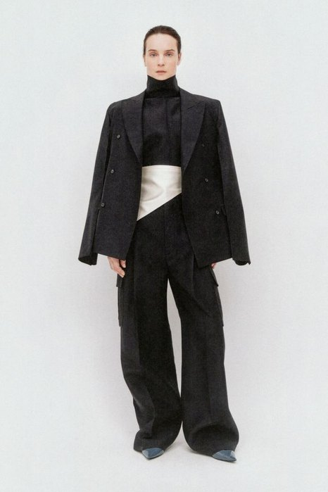

第2课时 · 评审环节
05 系列编排评审
为什么这 5 套造型必须在一起？
中期评审不是问“哪一张最好看”，而是检查每套造型在系列里承担什么角色。学生要能说明：同一系列基因如何通过不同角色、材料强度和产品层级被分配。
视觉参考 / 5套造型
Carven Pre-Fall 2026：用相近语法做出角色差异
观察同一系列如何通过长度、身体距离、材料重量和开合位置制造差异。课堂讨论时不要只说“统一”，要指出每套造型承担的具体功能。




01主视觉款
建立系列最强记忆点。
02核心产品款
最能被真实穿着和销售。
03比例变化款
调整长度、体积或层次。
04过渡款
连接强款与日常款。
05商业引流款
降低穿着门槛。
06收束款
完成主题记忆点。
图像：Carven 2026早秋系列｜仅用于“系列编排”的课堂反向分析，不代表品牌官方版型说明。